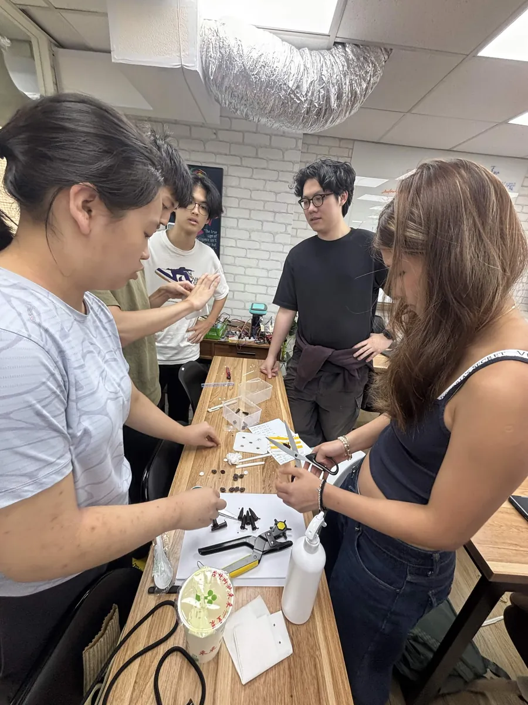
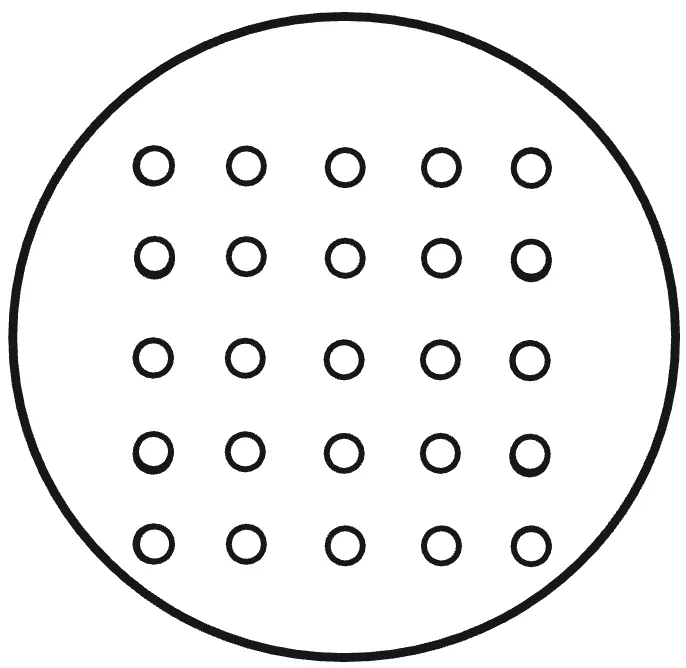
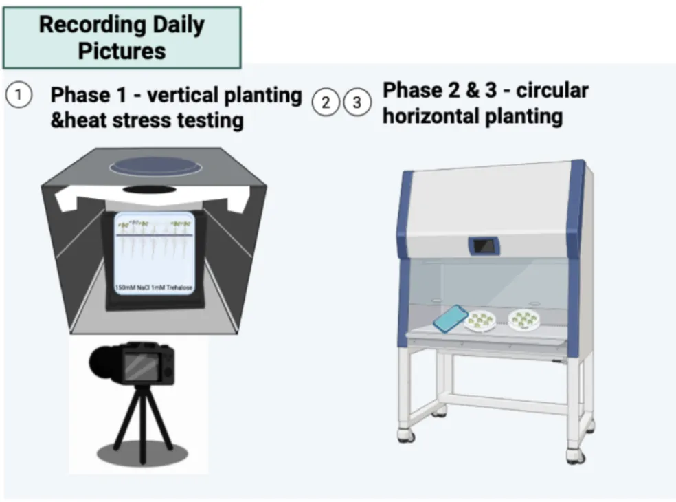
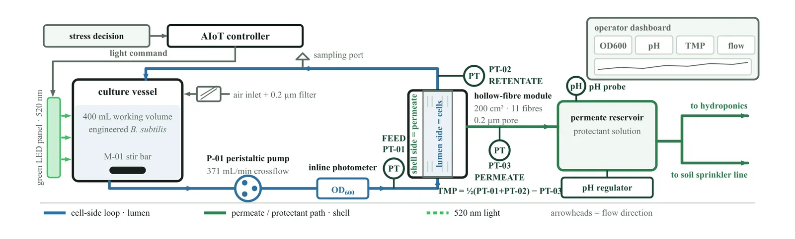

Seven resources ReLeaf hands on: parts, a hydroponics plate, a plant protocol, a containment method, an inline photometer, a GIS workflow and lesson materials.
Each one is written up with the reasoning behind it and its limit named. The plate ships as CAD and STL files with fixed dimensions and an assembly guide, and the plant protocol pins medium, vernalisation, plate angle and imaging geometry across 15 pages of fixed conditions. Two of them carry no number: containment has no log reduction value and the photometer has no biomass calibration, so both are offered as a method. The lesson materials carry a CC BY 4.0 licence, so a team in another country can translate and reteach them.
ReLeaf is a project for our own agricultural application and a set of tools, protocols, hardware designs and engineering lessons for teams that come after us.
They span synthetic biology, plant experimentation, hardware, measurement, data analysis and education. Each one comes with the reasoning behind it and its limit named.
A 4 module design and associated genetic constructs and parts, for teams working in plant synthetic biology, microbial engineering or agricultural biotechnology.
A low-cost inline photometer for continuously monitoring microbial density within the hollow-fiber bioreactor, with its calibration problems documented.
Lesson materials on an online website, taught and revised across three age bands before they were published.
Parts
A 4 module design and associated genetic constructs/parts.
Figure 1. The four modules. A module that does not assemble can be rebuilt without touching the other three. Figure from Description.
Why it matters. Provides a modular biological design that can be adapted or built upon by future teams.
Who can use it. Future iGEM teams working in plant synthetic biology, microbial engineering, or agricultural biotechnology.
Resources. Part documentation, characterization data, protocols.
Before reusing them, note three things. Every module was assembled with the SubtiToolKit Golden Gate system in Bacillus subtilis [1], so the parts fit that framework, not a standard E. coli chassis. The light-driven cassette uses the CcaS/CcaR green light system [2], and we have no induction curve for it yet, so it is a design and not a characterised switch. Every bench result on this wiki was produced with the constitutive ACC deaminase cassette. Which modules assembled, which failed, and what the sequencing said are on Parts and Engineering.
Standardized laboratory hydroponics platform
At a laboratory at National Taiwan University we found older hydroponic setups stored away and no longer in use. A hydroponic system that exists is not necessarily one another lab can rebuild: without fixed dimensions and clear instructions it is a one-off.
Our first prototypes were plastic containers, enough to test plant spacing and nutrient exposure. Three printed generations later the hole pattern settled into a plate with defined dimensions and a layout that makes access, measurement and nutrient transfer repeatable.
A reproducible hydroponics plate designed specifically for laboratory plant experiments.
3D-printable components
CAD/STL files
Standardized dimensions
Materials list
Assembly guide

Figure 2. Building the plates, 30 May 2026. The plate took three printed generations before the hole pattern settled, and a later team can skip that work.
Why standardization matters. Reduces variation in plant spacing, nutrient exposure, root environment, and experimental setup, making experiments easier to reproduce and compare.
Who can use it. Research laboratories, school laboratories, plant-synbio teams, and future iGEM teams.
A standardized workflow for evaluating plant responses under controlled growth and stress conditions.
Why it matters. Allows future teams to reproduce our plant experiments and compare biological treatments under consistent conditions.
Arabidopsis thaliana is one of our laboratory plant models. The protocol fixes temperature, photoperiod, nutrient conditions, growth medium, plant age and developmental stage, and hydroponic conditions, and adds controlled stress procedures for salinity, long-term heat and short-term heat shock. Each experiment records stress intensity, duration, plant age and treatment conditions, so it can be run again.
The readouts are fixed too: root length, fresh weight, chlorophyll content, MDA and total protein. Root length is traced in ImageJ from the baseline drawn on the vertical agar plates.
Fixed conditions in the ReLeaf standardized plant protocol
What is fixed
Value
Plant material
Arabidopsis thaliana Columbia (Col-0 accession)
Medium
Half-strength Murashige and Skoog medium, 1% sucrose, pH 5.7 to 5.8
Plate format
Circular horizontal plates, 30 mL agar; vertical plates, 50 mL agar
Vernalization
4 days in darkness at 4 °C
Germination
4 days in the growth chamber under standardized growth conditions
Seedling selection
Seedlings of similar developmental stage and root length
Root reference line
Horizontal line approximately 3 cm from the top of the square plate
Plate angle
Vertical with a slight backward tilt around 15°
Observation window
Approximately 10 days, photographed daily
1. Prepare ½ MS growth mediumfor 1 L of agar solution
Component
Amount
½ MS medium powder
2.3 g
MES buffer
0.5 g
Sucrose
10 g
Agar
10 g
Distilled water
To 1 L
Mix components thoroughly using a hot plate to stir.
Adjust to pH 5.7 to 5.8 using 0.1 M KOH if necessary.
Autoclave for 20 minutes at 127 °C.
Pour 30 mL of agar for circular horizontal plates and 50 mL for vertical plates.
2. Prepare Arabidopsisvertical and circular horizontal plates
For vertical plates
Use the seed template (3 cm, 5 cm, 4 cm) to plant 18 seeds on each agar plate in two rows, nine seeds on each row.
Use breathable tape to seal each of the agar plates.
Label the vernalization date.
Wrap the agar plates with aluminum foil.
Vernalize seeds at 4 °C in darkness for 4 days.
Incubate in the growth chamber for 4 days germination under standardized growth conditions.
Select seedlings with similar growth and root length.
Draw a horizontal reference line approximately 3 cm from the top of the square plate.
Transfer seedlings based on the template so the root starting points align with the line. (The position allows subsequent root growth to be measured consistently.)
Grow plates vertically with a slight backward tilt around 15°.
For circular horizontal plates
Use the circular horizontal plate seed template to plant seeds on each agar plate (number of seeds vary upon the trial settings).
Use breathable tape to seal each of the agar plates.
Label the vernalization date.
Wrap the agar plates with aluminum foil.
Vernalize seeds at 4 °C in darkness for 4 days.
Incubate in the growth chamber for 4 days germination under standardized growth conditions.

Figure 3. The circular horizontal plate seed template.
3. Application scenarios: salinity stress and protectantsthree delivery methods, one per protectant type
1. Trehalose. Application: mix with agar mixture before solidification.
½ MS agar plate preparation (salinity test trial plates). The following protocol is for 600 ml of agar, 12 agar plates: control (no trehalose) x control (no NaCl), control x 150 mM NaCl, control x 250 mM NaCl, and the same three NaCl conditions at 1 mM, 5 mM and 10 mM trehalose.
Prepare the following:
½ MS medium powder (w/o sucrose)
1.38 g
MES buffer
0.3 g
Distilled water
600 ml
Sucrose (1%)
6 g
Agar powder (1%)
6 g
Add the contents into a 1000 ml flask
Use a hot plate to stir (with a magnetic stirring rod) until no sediments are left in the solution
Use the pH probe and measure the pH of the solution, make sure the pH is 5.7 to 5.8
If the pH is too low, add 0.1 M KOH slowly to increase it
Pour 200 ml of mixture out into another flask to separate into three flasks, label with [0 mM], [150 mM] and [250 mM]
Add 2.192 g of NaCl into the flask labelled [150 mM NaCl]
Add 3.652 g of NaCl into the flask labelled [250 mM NaCl]
Prepare 4 flasks for different trehalose concentrations (0, 1, 5, 10 mM)
Prepare 12 flasks and pour the respective trehalose and NaCl concentration in each of the flasks
making sure there is 50 ml in each of the flasks (12)
label each flask clearly according to their trehalose concentrations
To their respective trehalose concentrations, add:
Trehalose concentration
Amount of trehalose (for 50 ml of medium)
0 mM
0 µL
1 mM
500 µL
5 mM
2500 µL
10 mM
5000 µL
Wrap the necks of the flasks with aluminum foil and stick a piece of indicator tape on top
Autoclave for 20 minutes at 127 °C
Wait for the pressure to reach 0 before retrieving the flask
During the autoclave, label 8 of the petri dishes with a marker in the biosafety cabinet
right top: date and arrow pointing up to show direction for pictures
bottom lid: different trehalose concentrations and NaCl concentration or control
Transfer half of the flasks to BSC
Store the other half of the flasks in the hot bath while pouring so that it does not solidify
Make sure its surface is dry by wiping the flasks with a paper towel before spraying 70% EtOH on them
Pour each of the medium mixtures into their square petri dishes (around 50 ml)
Transfer the other half of the flasks into the BSC
Pour each of the medium mixtures into their square petri dishes
Let the petri dishes solidify at room temperature under the BSC
2. CH bio peptide. Application: top drench solution on agar surface with treatment timings.
(After plants have been grown on agar in growth chamber for 4 days)
Dilute NaCl solutions and CH bio peptide
Dilution factor of NaCl solutions based on concentrations
NaCl concentration
Dilution factor
0 mM
0 µL
75 mM NaCl
500 µL
100 mM NaCl
2500 µL
150 mM NaCl
5000 µL
Dilute CH bio peptide by 1/500 dilution rate into a 15 ml centrifuge tube: 9.98 ml of sterile ddH2O + 20 µl of peptide
Treatment timings:
Apply protectants to pre-treatment groups (1 day before)
Aspirate 1 ml of diluted peptide and apply onto the agar surface (ensure solution has submerged the plants)
Apply protectants and NaCl to co-treatment groups
Aspirate 1 ml of diluted peptide and apply onto the agar surface (ensure solution has submerged the plants)
Aspirate 1 ml of specific NaCl concentration into its corresponding group (all treatment groups receive salinity stress at the same day)
Apply protectants and NaCl to after-treatment groups (1 day after)
Aspirate 1 ml of diluted peptide and apply onto the agar surface
3. ACCD. Application: foliar spraying.
(After plants have been grown on agar in growth chamber for 4 days)
Purify ACCD and perform buffer exchange/dialysis before plant application.
Transfer the ACCD solution into a clean spray container.
Treatment timings:
Spray CH bio peptide on pre-treatment plate (1 day before)
Open the BSC
Dilute the CH bio peptide by 1/500 dilution rate (19.96 ml of sterile ddH2O + 40 µl of peptide) into a 50 ml centrifuge tube
Apply an individual sprayer onto the centrifuge tube
Take out the plate labeled “pre-treatment”, place it vertically, spray the CH bio peptide toward the plants entirely from leaves to roots with a 15 cm distance in between (around 2 sprays, make sure all the plants received treatment)
Seal the plates with breathable tape and put it back into the growth chamber
Spray CH bio peptide on co-treatment plate (day 0)
Open BSC
Take out the plate labeled “co-treatment”, place it vertically, spray CH bio peptide toward the plants entirely from leaves to roots with a 15 cm distance in between (around 2 sprays, make sure all the plants received treatment)
Seal the plates with breathable tape
Place all 4 groups of plates onto a rack while the plates stand with a slightly tilted angle, then place the rack entirely into the incubator at 37 °C under white light for thermo priming
Observe for 5 days inside the incubator
Spray CH bio peptide on after-treatment plate (1 day after)
Open BSC
Take out the plate labeled “after-treatment” from the incubator, place it vertically, spray CH bio peptide toward the plants entirely from leaves to roots with a 15 cm distance in between (around 2 sprays, make sure all the plants received treatment)
Seal the plates with breathable tape and place it back into the incubator
Note that the 0 mM NaCl group receives the same volume of sterile water treatment as the protectant/NaCl to ensure the equivalent amount of liquid exposed to the plants across groups.
ACCD concentration: ________ Volume per spray: 1.6667 ml
LEA14. Application method: purified protein solution.
For consistency with the ReLeaf salinity-testing platform, apply purified LEA14 externally to the plant rather than incorporating engineered bacteria into the plant experiment.
Prepare purified LEA14 in the selected low-salt plant-compatible buffer.
Apply the same volume to each treatment group.
Apply buffer alone to corresponding control groups.
Recommended standardized delivery format for comparison: foliar application using the same spray volume and number of sprays as the ACCD trial.
Exact LEA14 dose has not yet been established in the supplied experimental records and should be experimentally optimized before being presented as a validated concentration.
Prepare BoPep4 at the experimentally selected working concentration.
Apply an equal volume to plants in each BoPep4 treatment group.
Use the corresponding peptide buffer without BoPep4 as the treatment control.
To keep comparisons between ReLeaf protectants consistent, use the same foliar spray framework used for ACCD unless a different delivery method is experimentally shown to perform better.
Exact BoPep4 application concentration is not defined in the supplied plant-testing records and should remain listed as an optimization parameter until experimentally validated.
4. Treatment timingpre, co and post, the comparison the protocol is built around
The same protocol can be used to investigate when protectants should be released.
Treatment
Timing
Pretreatment
Protectant applied 1 day before NaCl stress
Cotreatment
Protectant applied at the same time as NaCl stress
Post-treatment
Protectant applied 1 day after NaCl stress
This structure was used in later protectant experiments to compare timing-dependent rescue effects. For a simple first comparison, use cotreatment for all three protectants.
5. Monitor plant responsewhat to photograph, what to record, and the endpoint measurements
Observe plants for approximately 10 days. Take standardized photographs daily using the same black background, the same lighting, the same plate orientation, and the same camera distance with quality control.

Figure 4. Recording daily pictures. Phase 1, vertical planting and heat stress testing. Phases 2 and 3, circular horizontal planting.
Daily: root growth, leaf area or plant size, visible phenotype, survival.
Data collection: fresh weight, chlorophyll content, final root length.
For protectant testing groups: MDA, total protein, enzymatic activity testing.
Experimental logic. Salt only determines the effect of salinity stress. Protectant only determines whether the protectant itself affects plant growth. Salt plus protectant determines whether the protectant rescues plants from salinity stress. Pretreatment against cotreatment against post-treatment determines when protectant delivery is most effective.
The runs made with this protocol, and what each of them measured, are on Plants and Results. Read those two pages next to the protocol: they say which readouts we were able to use and which ones we are still checking.
Membrane-based containment
A physical containment strategy using hollow-fiber membrane separation between engineered B. subtilis and the external plant environment.
Design principle. Allow protectants to pass through the membrane while retaining bacterial cells inside the bioreactor.

Figure 5. Cells stay in the lumen and the permeate side carries protectant out. The module is 200 cm² with 11 fibres at a 0.2 µm pore rating.
For reuse, the specification is a PES hollow-fibre module rated at 0.2 µm, run in crossflow with the cells on the lumen side, against a B. subtilis cell of micrometre scale. The students' containment argument:
The hollow fiber membrane physically blocks bacteria from leaving the lumen side, since the pore size of the membrane (0.2µm) is much smaller than the cell size of B. subtilis (0.25 to 1.0µm in diameter). To validate this theory, a simple test was conducted. When the bioreactor was running, we collected medium from the lumen and shell sides and plated them. After 24 h at 37 °C, the samples were compared with each other.
Why it matters. Provides a framework for environmental synthetic biology applications where engineered organisms need to remain physically contained.
Who can use it. Future teams working on plant and microbe systems, environmental biotechnology, bioreactors, or engineered-microbe deployment.
The build, the fittings and the pressure work are on Hardware: Bioreactor; the containment claim as a safety argument is on Safety; the plating evidence is on Results.
Inline dual-beam flow photometer
A low-cost inline photometer for continuously monitoring microbial density within the hollow-fiber bioreactor.
Problem addressed. Conventional laboratory OD instruments such as the BioDrop can cost tens of thousands of dollars and generally require manual sampling.
Our approach
Inline continuous monitoring
Dual-beam optical architecture
Pre-cuvette reference channel
0.2 mm short optical path
Integration directly into the existing hollow-fiber circulation loop
Live web dashboard
Why it matters. Provides a potentially lower-cost and more accessible approach to continuously tracking microbial growth without repeatedly removing samples.
Validation, and the limits that came with itwhat the long run and the calibration actually established
Continuous run over days, logged at fixed intervals, with the full growth curve captured through decline phase.
Initial comparison with BioDrop measurements.
Documented reference-channel drift and other remaining calibration limitations.
Against a BioDrop reading the same titanium dioxide suspension, our instrument gives ours = 1.018 × BioDrop − 0.031 with R² = 0.995, and above 30 mg of added TiO2 it is the steadier of the two instruments. This shows the reading is linear in turbidity. It is not a cell count: the silica calibration that would tie a reading to biomass is written up but not yet run. Our OD channel also failed partway through the longest run, and the log does not record what was in the loop. Reuse the optical design and the drift log; there is no biomass calibration yet.
Engineering contribution. We document not only the final device, but also its calibration challenges, optical drift, bubbling issues, and design iterations so future teams can build upon the system.
Who can use it. Teams working with bioreactors, continuous culture, fermentation, microbial growth monitoring, and closed-loop biological systems.
The device, its four build cycles, the optical drawings and the firmware are on Hardware: Photometer. The dashboard and the trust layer that decides which readings to keep are on Digital Twin.
Geographic information systems
Plant stress is not spread evenly. Temperature, salinity, rainfall and agricultural productivity vary across Taiwan, so each farming region carries its own combination of risk. We used GIS to connect environmental conditions with agricultural outcomes and to visualize where climate-related stress may overlap with important crop-producing regions.
The system is built to answer local conditions, so the farm-by-farm picture is what it needs. Spatial data shows:
where heat stress is more severe
where salinity risk is higher
which agricultural regions may be more vulnerable
where localized deployment could have the greatest relevance
In our analysis of Taiwan, we compared climate variables with regional rice-yield data to explore how environmental conditions relate to agricultural productivity. This helped us move from looking at individual farms to understanding broader geographic patterns.
LLM-assisted application. GIS can reveal spatial patterns, but interpreting large environmental datasets can still be difficult for non-specialist users. To make these outputs easier to understand, we developed an LLM-assisted integrative prompt that presents a structural guideline for LLMs to organize large data sets that contain inconsistent coordinates, software, and formatting into files that can be entered directly into geographical information systems. The workflow can accept various formats of data sets and translate them into numerics that can be entered directly into QGIS without the risk of receiving false data that the AI created. Rather than replacing GIS analysis, the LLM helps the user organize the given data sets without having to do external checking, research, and organization.
Why it matters. This contribution gives future teams a way to connect a synthetic biology or engineering solution to the geographic context in which it may eventually be used. Instead of asking only “does our solution work?”, teams can also ask “where is the problem most relevant, and how do environmental conditions differ between locations?” The workflow can be adapted by teams working in agriculture, environmental biotechnology, climate resilience, public health, or other location-dependent applications.
Full lesson plans, bilingual slide decks and a printable card game on a website, for elementary, junior high and high school. Each was taught in a classroom and revised between trials. They are released under the same CC BY 4.0 licence as this wiki, so a team in another country can translate and reteach them without asking. The files and the survey results that changed them are on Education.
Recommendations for future teams
The designs are only half of what we can hand over. The other half is what the engineering process taught us, including the parts that went wrong.
What worked
Five habits that paid for themselves, and that cost almost nothing to start.
Stirring the reservoir. Adding a 200 rpm magnetic stir bar was one of the three changes (with the sampling point and the temperature) between a reactor where the culture did not grow and one that reached plateau faster than a shake flask. If you build a perfusion loop, stir the reservoir from the first run.
Splitting the construct into four modules, so that a failure could be located and rebuilt without touching the rest.
Fixing the imaging geometry before the first experiment: same background, same lighting, same plate orientation, same camera distance. It costs an afternoon and it makes every later photograph comparable.
Calibrating an optical instrument against a nonliving turbidity standard first. It separates instrument behaviour from biology, and it is cheap.
Taking the prototype to a farmers' market and a public forum while it was still ugly. The questions we got there changed the design.
What didn't
Six failures with a cause we can name. Each one cost a week or a dataset.
The first reactor build leaked at the peristaltic pump and the trial had to be stopped early. Use biocompatible tubing that seals well at the pump head, not standard tubing.
Running the loop without stirring: the culture in the fibre lumen did not grow at 22 °C while a control at the same temperature did.
Trehalose as a positive control. Six experiment sets, and no rescue that survives its own controls. Pick a reference protectant with a published dose in your assay before you build experiments on it.
Spraying plants with a culture nobody had blotted. A Western blot later showed that the batch carried no detectable ACC deaminase, which voided the whole week of plant work.
Chlorophyll workbooks maintained in two copies. The same raw absorbances produced different answers in different files, and every number from four experiment sets had to be withdrawn.
Leaving the reagent field blank on the hydroponic box sheets. Two complete datasets exist and nobody can now say what was added.
What we would change
What we would do differently on day one of another project.
Measure the light before building experiments on it: an intensity map across every well position, the duty cycles written down, and one induction curve, green against dark, before anything downstream assumes the switch works.
One canonical spreadsheet per assay, with the formula written once and the raw readings never retyped.
Record the run conditions in the same file as the data: medium, inoculum, which compartment the optics sat on, incubation time and temperature.
Plate the shell side at every sampling point, not once per project, so containment stops resting on a single plate.
Log transmembrane pressure continuously across a whole run instead of taking spot readings at each pump setting.
Decide the normalisation for chlorophyll (per fresh weight or per plant) before the first extract, because the two rank the same samples in opposite orders.
Future development
The work a team picking this up would start with.
Increase experimental throughput
Improve system automation
Strengthen containment validation
Improve photometer calibration and ratiometric measurement
Adapt hydroponics to additional plant species
Scale modular bioreactor systems
Integrate sensing and biological control into a more automated closed-loop platform
Everything on this wiki, text, figures and files, is under the CC BY 4.0 licence. Take it, change it, and say where it came from.
References
Caro-Astorga, J., Rogan, M., Malcı, K., Ming, H., Debenedictis, E.,
James, P., & Ellis, T. (2025). SubtiToolKit: a bioengineering kit for
Bacillus subtilis and Gram-positive bacteria.
Trends in Biotechnology, 43(6), 1446 to 1469.
doi:10.1016/j.tibtech.2025.02.004
Castillo-Hair, S. M., Baerman, E. A., Fujita, M., Igoshin, O. A., &
Tabor, J. J. (2019). Optogenetic control of Bacillus subtilis gene
expression. Nature Communications, 10, 3099.
doi:10.1038/s41467-019-10906-6